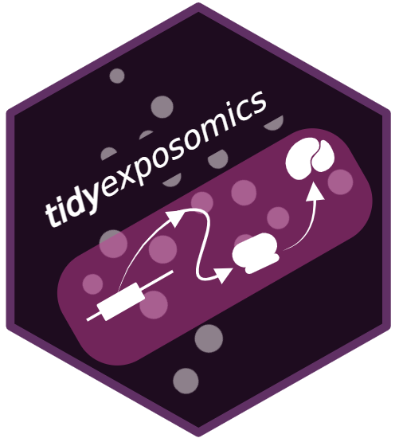
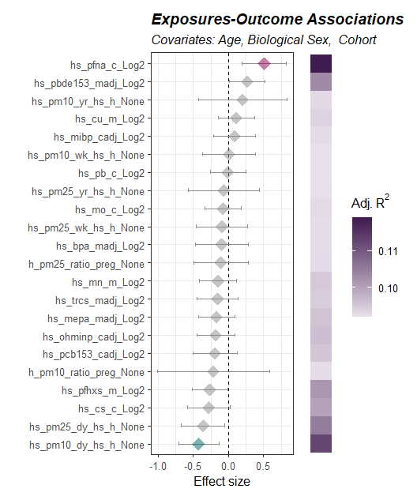
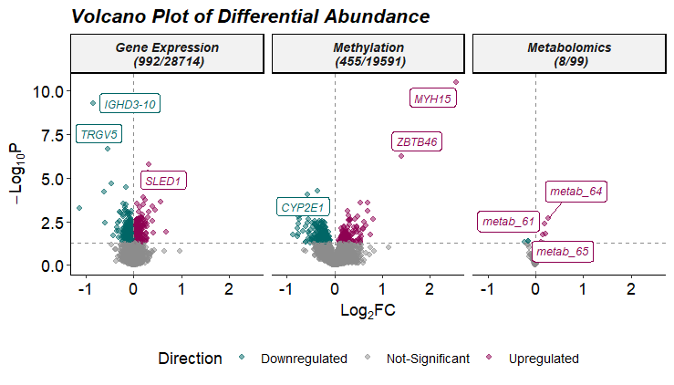
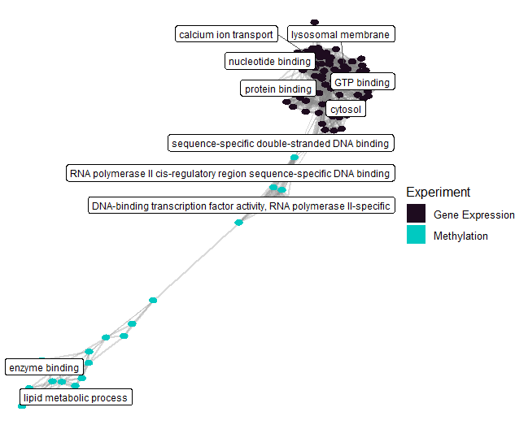

tidyexposomics 
Integrated exposure-omics analysis powered by tidy principles
Overview
The tidyexposomics package is designed to facilitate the integration of exposure and omics data to identify exposure-omics associations. Functions follow the tidyverse framework, where commands are designed to be simplified and intuitive. The tidyexposomics package provides functionality to perform quality control, sample and exposure association analysis, differential abundance analysis, multi-omics integration, and functional enrichment analysis.

Command Structure
To make the package more user-friendly, we have named our functions to be more intuitive. For example, we use the following naming conventions:

Results can be added to the MultiAssayExperiment object or returned directly with action = 'get'. We suggest adding results, given that pipeline steps are tracked and can be output to the R console, plotted as a workflow diagram, or exported to an excel worksheet.
Quick Start
The following code is an example of a basic tidyexposomics workflow. It includes loading example data, performing basic quality control, running exposure-wide association studies (ExWAS), differential abundance analysis, correlating differentially expressed genes (DEGs) with exposures, and functional enrichment analysis. However, there is so much more to the tidyexposomics package! So check out the Get Started page for a more detailed walkthrough of the package’s functionality.
Installation
The tidyexposomics package depends on R (>= 4.4.0) and can be installed using the following code:
# Install and Load Packages
remotes::install_github("BioNomad/tidyexposomics")
library(tidyexposomics)
library(tidyverse)Load Example Data
We provide example data based off the ISGlobal Exposome data challenge 2021. Here, we will examine how exposures and omics features relate to asthma status.
# Load the example data
load_example_data()
# Create ExpOmicSet
expom <- create_expomicset(
codebook = annotated_cb,
exposure = meta,
omics = omics_list,
row_data = fdata
)
# Grab exposure variables
exp_vars <- annotated_cb |>
filter(category %in% c(
"exposure to oxygen molecular entity",
"aerosol",
"environmental zone",
"main group molecular entity",
"transition element molecular entity",
"exposure to environmental process",
"polyatomic entity"
)) |>
pull(variable) |>
as.character()Quality Control
We provide several quality control functions including those that handle filtering missing data, imputation, variable normality checks, and variable transformation.
# Filter samples and exposures
expom <- expom[, !is.na(expom$hs_asthma)]
expom <- expom[, expom$FAS_cat_None == "Low"]
# Filter & impute exposures
expom <- expom |>
filter_missing(na_thresh = 5) |>
run_impute_missing(exposure_impute_method = "missforest")
# Filter omics
expom <- expom |>
filter_omics(
method = "variance",
assays = "Methylation",
assay_name = 1,
min_var = 0.05
) |>
filter_omics(
method = "variance",
assays = "Metabolomics",
assay_name = 1,
min_var = 0.1
) |>
filter_omics(
method = "expression",
assays = "Gene Expression",
assay_name = 1,
min_value = 1,
min_prop = 0.3
)
# Check variable normality & transform variables
expom <- expom |>
# Check variable normality
run_normality_check(action = "add") |>
# Transform variables
transform_exposure(transform_method = "boxcox_best",
exposure_cols = exp_vars) ExWAS
Here we model the association between exposures and asthma status and adjust our model for child age, biological sex, and cohort.
# Perform ExWAS Analysis
expom <- expom |>
run_association(
source = "exposures",
outcome = "hs_asthma",
feature_set = exp_vars,
covariates = c("hs_child_age_None",
"e3_sex_None",
"h_cohort"),
action = "add",
family = "binomial")
# Visualize associations
expom |>
plot_association(
subtitle = paste("Covariates:",
"Age,",
"Biological Sex, ",
"Cohort"),
source = "exposures",
terms = exp_vars,
filter_thresh = 0.15,
filter_col = "p.value",
r2_col = "adj_r2")
Differential Abundance
Differentially abundance analysis is supported in tidyexposomics. Here we use limma_trend to identify features associated with asthma status.
# Run differential abundance analysis
expom <- expom |>
run_differential_abundance(
formula = ~ hs_asthma + hs_child_age_None + e3_sex_None + h_cohort,
method = "limma_trend",
scaling_method = "none",
action = "add")
# Plot Differential Abundance Results
expom |>
plot_volcano(
top_n_label = 3,
feature_col = "feature_clean",
logFC_thresh = log2(1),
pval_thresh = 0.05,
pval_col = "P.Value",
logFC_col = "logFC",
nrow = 1)
Multi-Omics Integration
Multi-omics integration is supported to derive insights across omics layers. Here we use the DIABLO method and set the outcome variable of interest to asthma status.
# Perform Multi-Omics Integration
expom <- expom |>
run_multiomics_integration(method = "DIABLO",
n_factors = 5,
outcome = "hs_asthma",
action = "add")
# Identify factors that correlate with the outcome
expom <- expom |>
run_association(
source = "factors",
outcome = "hs_asthma",
feature_set = exp_vars,
covariates = c(
"hs_child_age_None",
"e3_sex_None",
"h_cohort"),
action = "add",
family = "binomial")
# Extract top features that contribute to a factor
expom <- expom |>
extract_top_factor_features(method = "percentile",
pval_col = "p_adjust",
pval_thresh = 0.05,
percentile = 0.95,
action = "add")
# Determine which features drive multiple factors
expom <- expom |>
run_factor_overlap()Exposure-Omics Association
Now that we have our multi-omics features associated with asthma status, we can correlate these with our exposures. This helps identify how exposure classes may affect asthma biology.
# Grab top common factor features and ensure
# feature is renamed to variable for the variable_map
top_factor_features <- expom |>
extract_results(result = "multiomics_integration") |>
pluck("common_top_factor_features") |>
dplyr::select(variable=feature,
exp_name)
# Correlate top factor features with exposures
expom <- expom |>
# Perform correlation analysis between factor features
# and exposures
run_correlation(feature_type = "omics",
variable_map = top_factor_features,
exposure_cols = exp_vars,
action = "add",
correlation_cutoff = 0.2,
pval_cutoff = 0.05,
cor_pval_column = "p.value") |>
# Perform correlation analysis between factor features
run_correlation(feature_type = "omics",
variable_map = top_factor_features,
feature_cors = T,
action = "add",
correlation_cutoff = 0.2,
pval_cutoff = 0.05,
cor_pval_column = "p.value")Enrichment Analysis
After identifying features associated with asthma and exposures, we can perform functional enrichment analysis to understand what biological processes are affected.
# Run enrichment analysis on factor features correlated with exposures
expom <- expom |>
run_enrichment(
feature_type = c("omics_cor"),
feature_col = "feature_clean",
db = c("GO"),
species = "goa_human",
fenr_col = "gene_symbol",
padj_method = "none",
pval_thresh = .1,
min_set = 1,
max_set = 800,
clustering_approach = "diana",
action = "add"
)
# Plot enrichment term network plot
expom |>
plot_enrichment(
feature_type = "omics_cor",
plot_type = "network",
label_top_n = 2
)